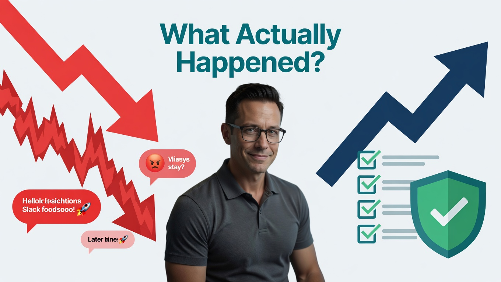
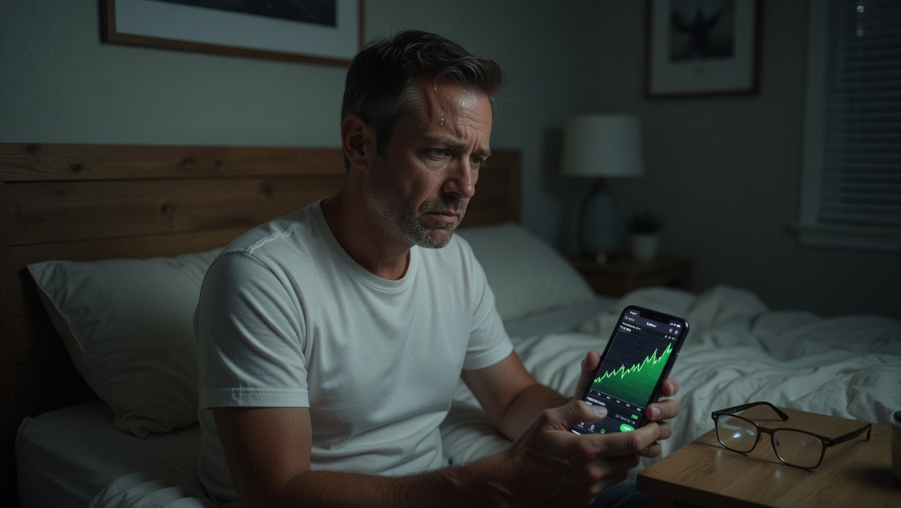

The Slack notification sound had a particular pitch, a soft, two-note chime, and by Thursday afternoon Mike had come to hate it.
It had started three weeks earlier, the morning after Jason mentioned, almost in passing over burnt coffee, that he had put eight thousand dollars into a small AI infrastructure company nobody in the office had heard of. Mike had nodded politely at the time, stirring his iced tea and thinking the stock already looked expensive.
Now the entire fourth floor had lost its mind.
Jason had become "The Oracle." Someone had Photoshopped his face onto a golden bull statue and pinned it in the #watercooler channel, where it now had ninety-one reactions. Every refresh of Slack brought new screenshots, new rocket emojis, and new stories of easy money. Priya from Product had bought in two weeks ago. Chloe from Marketing doubled down. Even Dave from Accounting, who still printed his emails, had quietly gotten in. The break room, the cafeteria, and even the server room had turned into unofficial trading floors.
The stock, ArgentAI, had more than tripled.
Jason walked around the office with the relaxed confidence of a man who had already won. At lunch, he slid into the seat across from Mike, peeling the lid off a yogurt.
"You still haven't gotten in?" he asked, genuinely surprised. "Mike, come on. This is not a fluke. The whole sector is moving. You are watching it happen in real time."
Mike forced a smile. "I'm thinking about it."
"That's what thinking costs you," Jason said kindly.
The words landed harder than Mike expected.
By 2:00 p.m., the pressure had become unbearable. Mike pulled up his brokerage app behind his oversized coffee mug. ArgentAI had broken $85. The daily chart looked like a staircase to heaven, pure uninterrupted green. He typed in the ticker, entered $10,000 — real money, money that meant something — and hovered over the glowing green "Buy" button.
His heart hammered against his ribs.
He could join the winning team. He could walk into the break room tomorrow and nod along when Jason bragged about the latest gap-up. He could stop being the only guy left behind.
But as his thumb moved toward the button, a flash of muscle memory stopped him cold.
He remembered the sickening drop in his stomach three weeks ago, selling NexSpace too early, locking in a small gain just to feel safe, then watching it triple without him. He remembered the acidic regret that followed. He had promised himself that night he would never let emotion hijack his decisions again.
Was this really any different? Was not buying now, driven by office chatter, envy, and the fear of missing out, just the opposite side of the same emotional coin?
Mike exhaled a shaky breath. His thumb slipped off the glass. He canceled the order and shoved the phone face-down onto his desk.
That night, long after Sarah had fallen asleep, Mike lay in bed staring at the ceiling fan turning slowly above him. The humid Austin air clung to the windows. His phone sat on the nightstand, glowing faintly with the after-hours price of ArgentAI — up another 3.8%.
He had stood his ground. He had resisted the herd. He had let rationality win.
So why did he feel like such a loser?
Jason's voice echoed in his head:
Do not be the only guy left behind.
Mike turned over in the dark, the knot in his chest tightening.
Everyone in the office was getting rich.
Everyone except him.
And for the first time, he was not sure whether the cautious man was finally getting smarter or simply finding a more sophisticated way to stay poor.
The office had turned into an unofficial trading floor. Mike was the only one not celebrating.
What Actually Happened?

Mike did not lose money on this trade because he never placed it.
But he still lost something important: peace of mind.
He had experienced the full force of herd mentality, FOMO (fear of missing out), and social proof — three powerful psychological forces that often work together to override rational thinking. The office environment turned a simple stock into a social event. Jason's success, the constant Slack messages, the bragging in the break room, and the visible excitement of colleagues created an overwhelming sense that "everyone else is getting rich except me."
Mike felt the pull intensely. He almost acted on it. The only thing that stopped him was the fresh memory of his painful mistake with NexSpace just three weeks earlier. For the first time, a past regret actually helped him pause.
He did not fully escape the bias. The emotional turmoil was real, but he showed the first small sign of growth: he hesitated.
The Science Behind It
Herd mentality is one of the oldest and most powerful forces in human behavior. We are wired to follow the group because, for most of human history, being part of the tribe meant survival. Standing alone often meant danger.
In modern markets, this instinct becomes expensive.
The classic demonstration comes from Solomon Asch's conformity experiments in the 1950s. Asch showed that people will give obviously wrong answers to simple questions simply because everyone else in the room is giving the same wrong answer. The pressure to conform is so strong that many participants doubted their own eyes rather than stand out from the group.
FOMO is the modern, turbo-charged version of this bias. It combines social proof with loss aversion and urgency. When we see others making money, especially people we know, our brains interpret it as a threat to our status and future security.
Social exclusion activates the same brain regions as physical pain. When Mike felt "left behind," his brain was processing a biological threat.
Neuroeconomics research reveals something even more powerful: social exclusion and watching others succeed activate the same brain regions associated with physical pain. When Mike felt the anxiety of being "left behind," his brain was not processing a financial problem; it was processing a biological threat. That is why it physically hurts.
Robert Shiller, Nobel laureate and author of Irrational Exuberance, has shown how social contagion spreads through conversations, news, and observed success. When a few people get rich quickly and talk about it, the behavior becomes contagious.
In Mike's case, the office became a perfect petri dish for herd behavior. Jason's visible gains created social proof. The constant Slack messages created urgency. The fear of being "the only guy left behind" created emotional pressure that almost overrode Mike's better judgment.
The cost of giving in to these forces is enormous. Barber and Odean's landmark research on individual investors found that the people who traded most actively — the ones chasing hot tips and reacting to social excitement — consistently earned the worst returns. Activity felt like progress. In reality, it was often the opposite.

Long after Sarah had fallen asleep, Mike lay staring at the ceiling. ArgentAI was up another 3.8% after hours.
Your Behavioral Takeaway
The next time you feel the powerful urge to buy something because "everyone else is getting rich," pause and ask yourself one critical question:
"Am I buying this because of the fundamentals… or because I'm afraid of being left behind?"
If the honest answer leans toward the second reason, you are probably in the grip of herd mentality and FOMO.
Here is a simple "Social Proof Audit" you can run before any trade driven by excitement around you:
- Turn off the noise for 72 hours: Close Slack, Reddit, CNBC, and any group chats. Give yourself time to think without social pressure.
- Run the "Empty Room Test": Ask yourself: "If no one else was talking about this stock, would I still want to buy it right now based on my own research?"
- Set a pre-commitment rule: Decide in advance that you will not buy any "hot tip" from coworkers or friends on the same day it is mentioned. Force a 72-hour cooling-off period.
Mike is starting to build these small protections. You can too.
The goal is not to become immune to FOMO. The goal is to notice it when it happens — and to have a system that protects you from acting on it.